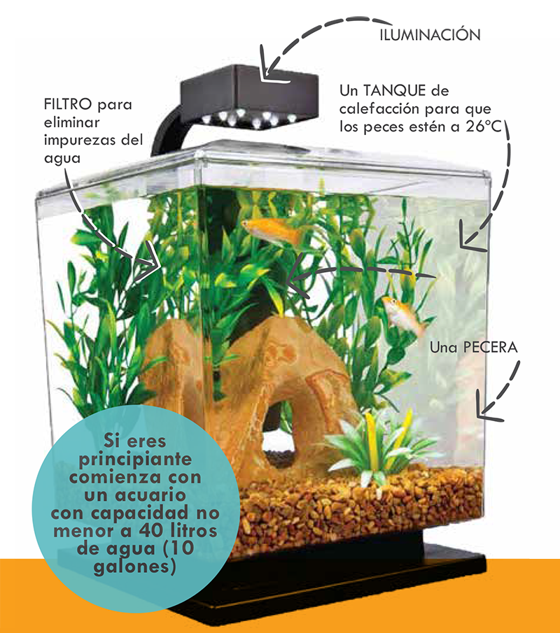
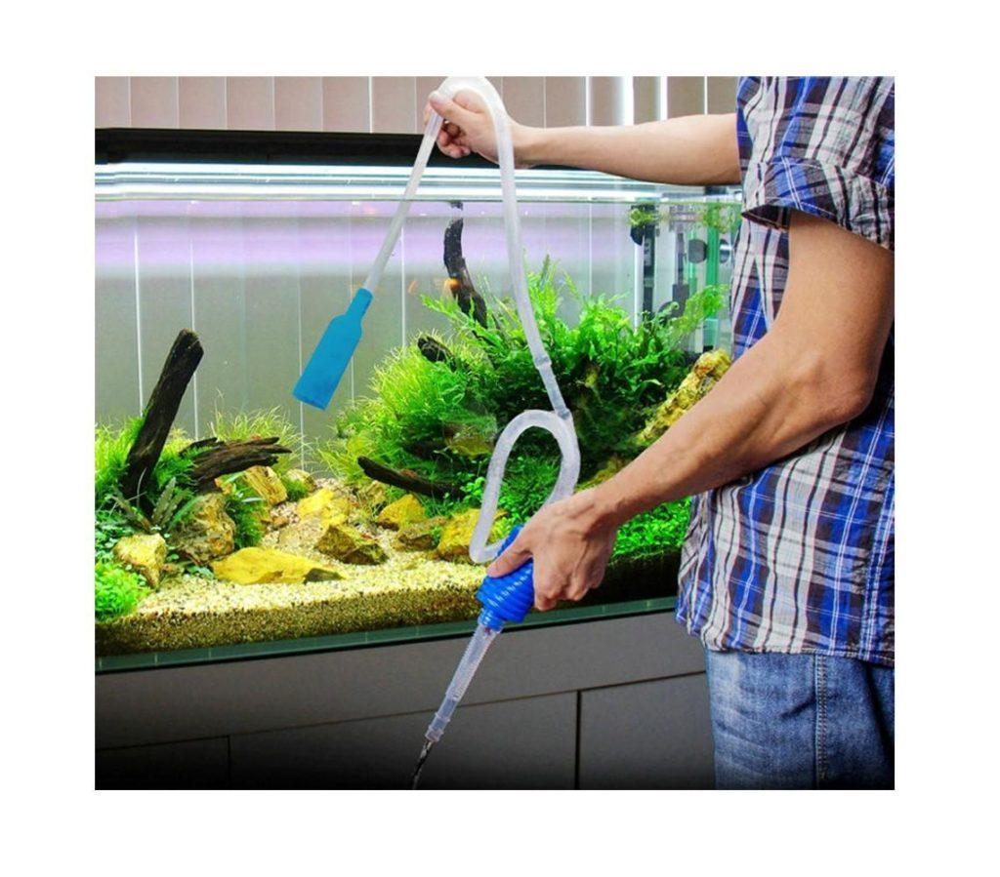

Cuidados de un Acuario
El cuidado de un acuario es fundamental para mantener un entorno saludable para tus peces y plantas acúticas.
Pautas importantes:
- Control diario de la tecnología
- Verifica el funcionamiento del filto y el flujo de agua
- Asegurate que la temperatura del agua sea correcta y que el sistema de calefacción funcione correctamente
- Cuidado de las plantas del acuario
- Observar las plantas diariamente. Si no hay signos de deficiencia o problemas con algas.
- Retirar hojas muertas flotantes
- Medidad de cuidado semanales
- Cambio de agua: Realiza cambios parciales de agua semanalmente.
- Extracción de lodos y restos vegetales: Aspira los restos del acuario con una campana de succión.
- Fertilización de plantas acuáticas: Asegurate de proporcionar nutrientes necesarios.
- Limpieza del cristal del acuario: Elimina algas y manchas del vidrio.
- Limpieza de iluminación:Limpia las lamparas y reflectores para tener una buena iluminación.
- Agua y acondicionamiento
- Utiliza agua fría para llenar el acuario.
- Deja que el agua del grifo repose unos minutos antes de llenar el acuario o el bidón.
- Acondiciona el agua según la necesidades de tus peces.


IR A LA PÁGINA PRINCIPAL